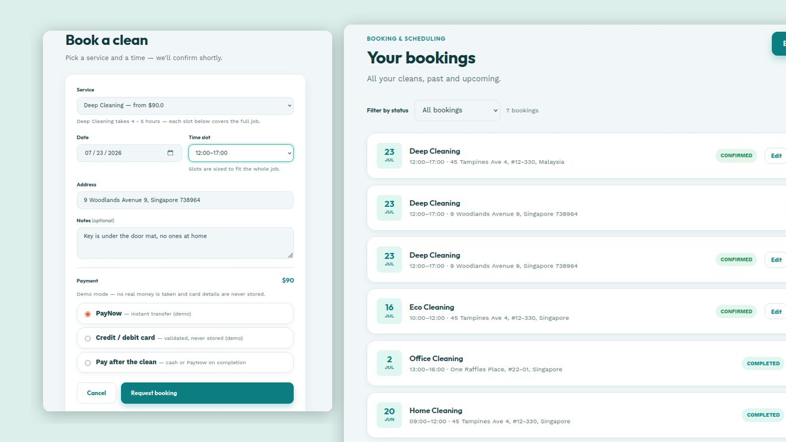
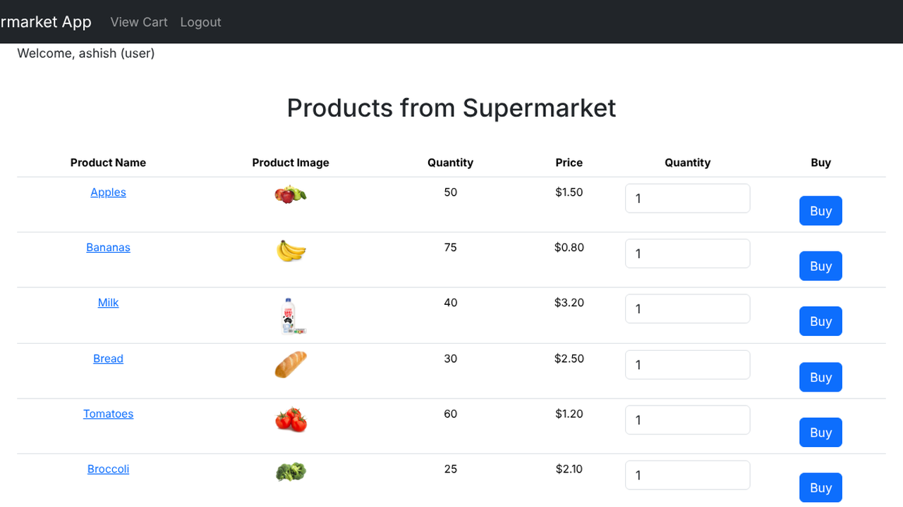

Team project · DevOps (C270)
Sparkle: cleaning service booking app
A web app for booking home cleaning services, built by a team of six. I owned the booking feature. It generates time slots based on how long each service takes, blocks past dates, checks card numbers with the Luhn algorithm, and lets users edit or cancel bookings. I also wrote the Dockerfile and docker-compose setup for the team's CI/CD pipeline.
- Python
- Flask
- SQLAlchemy
- MySQL (Aiven)
- Docker
View on GitHub →

Team project · Web development (C237)
UniPocket: student allowance tracker
An app that helps students and parents track allowance and spending. I built the budget dashboard, which shows the remaining balance, a pie chart of spending by category, and recent transactions. I set up the dev environment on a Linux VM and kept secrets out of the repo with a .env file.
- Node.js
- Express
- EJS
- Azure MySQL
View on GitHub →

Solo project · Web development (C237)
SupermarketApp
A full CRUD store app with product image uploads, login sessions, and role-based access, so admins and regular users see different pages. I moved the database to Azure MySQL and deployed the app on Render.
- Node.js
- Express
- MySQL
- Bootstrap
- Render
View on GitHub →

Lab project · Networking (C328)
Multi-site enterprise network
A network design for a multi-site company in Cisco Packet Tracer. I configured my zone's switches with VLANs, trunk links, and spanning tree, set the root bridge, and mapped neighbours with CDP.
- Cisco IOS
- VLANs
- STP
- Packet Tracer

Lab · Network automation (DEVASC)
RESTCONF router automation
I enabled RESTCONF over HTTPS on a Cisco CSR1000v virtual router, then used Postman and Python scripts to read and change interface settings through its API instead of the CLI.
- Python
- RESTCONF
- Postman
- Cisco CSR1kv

Coursework · Linux admin (C330)
RHEL 9 server administration
Hands-on work managing Red Hat Enterprise Linux 9: storage with LVM, file sharing with NFS, firewalld rules, SELinux, system logging, and Bash scripts to automate routine tasks.
- RHEL 9
- Bash
- LVM
- SELinux
- firewalld